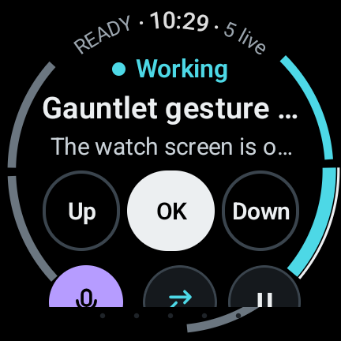
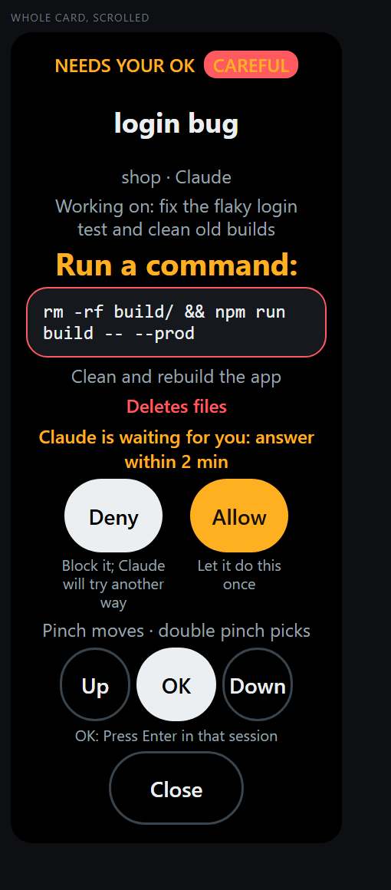
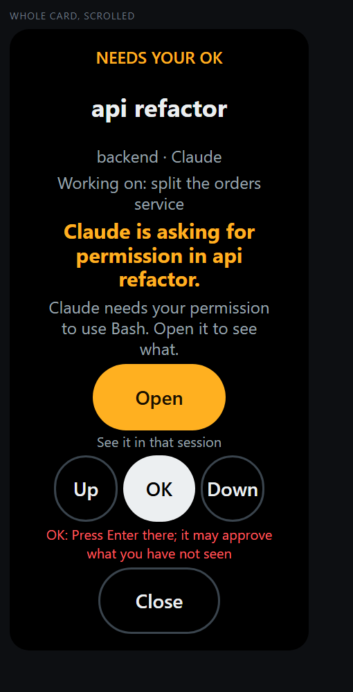
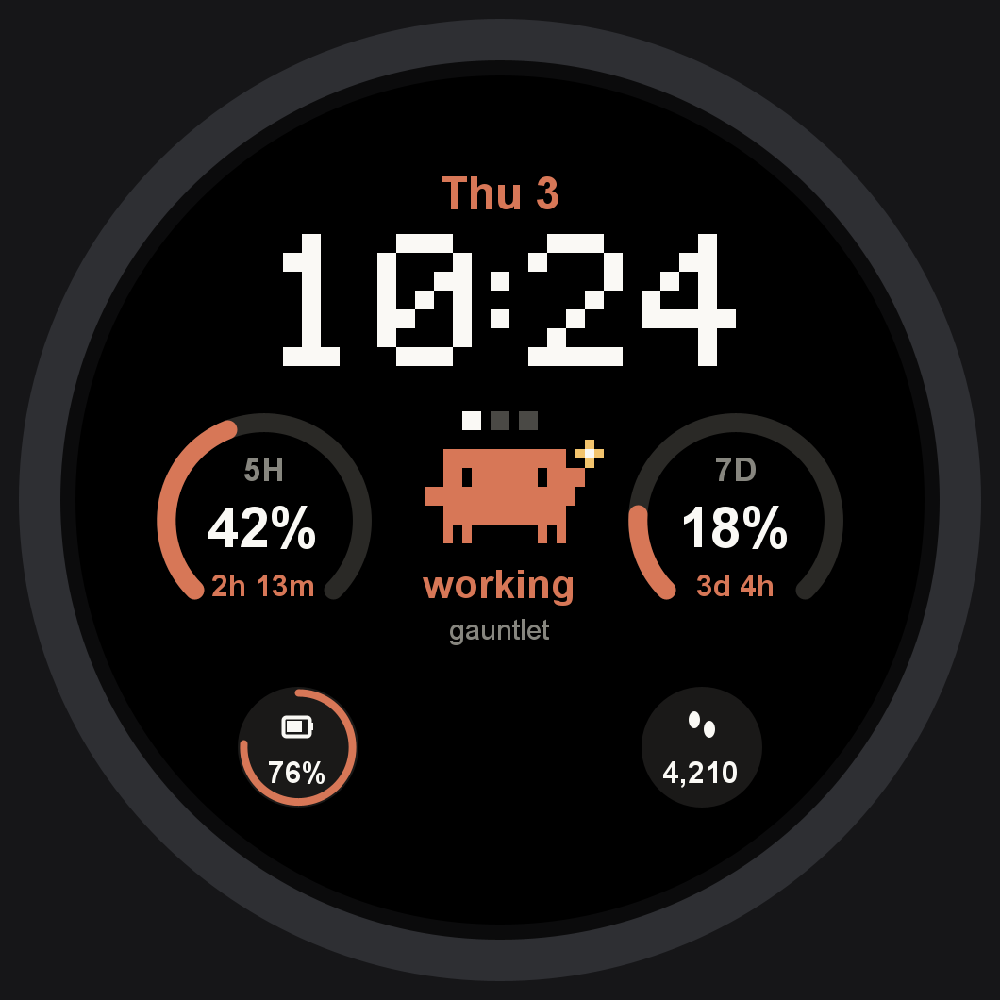
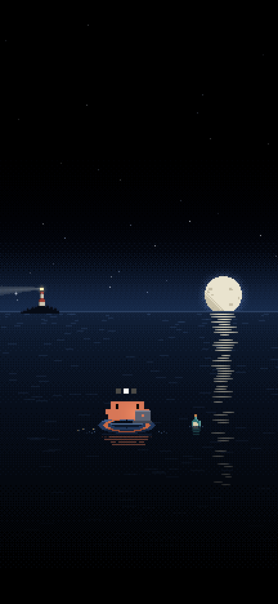
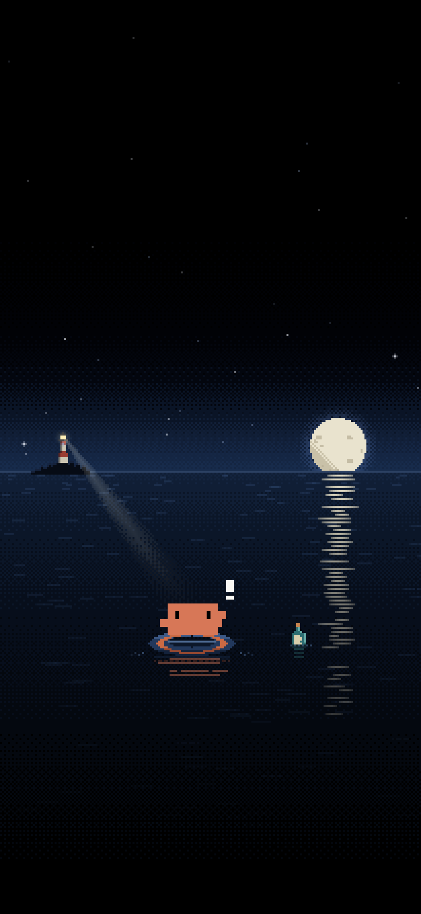

See which session needs you, approve what it asks, and talk back from your Galaxy Watch or Android phone.

Works with Claude Code and Codex on Windows, macOS and Linux. No account, nothing to type on the watch.
Paste one line in a terminal. It adds Gauntlet to every agent it finds and starts it at login.
irm https://raw.githubusercontent.com/NawafSheikh/gauntlet-plugin/main/install.ps1 | iexOpen Gauntlet on your phone or watch, on the same Wi-Fi. It finds your computer by itself.
Your computer opens a page with a six-digit code. If your phone shows the same code, click Allow. Done.
The console is the home screen of the watch app. Everything works by touch and the bezel; nothing fires from an accidental gesture.
Connected or not, the time, and how many sessions are live.
Its state and name. Tap the last line to read the conversation.
Press keys in that session only, for menus and prompts.
Speak a prompt. It is typed into the session and sent.
Change session, skill, permission mode or model. Turn the bezel, tap to apply.
Ignore every gesture until you resume.
One segment per session. Turn the bezel to move between them.
When a session needs you, the card says which session, what it wants in plain words, and what each button will do.



Plan usage for the next 5 hours and 7 days, the time, and a character that shows what your sessions are doing.

The live wallpaper follows your sessions.

The lighthouse finds the character when a session waits.
Gauntlet adds a few commands to Claude Code. Type them in any session.
/gauntlet:customiseDescribe the look you want: a calmer wallpaper, a darker one, a see-through widget.
/gauntlet:trainRecord a gesture on the watch, see how often it is caught, and tune it with Claude.
/gauntlet:pairApprove a phone or watch by its code when this computer has no browser.
/gauntlet:statuslineShow plan usage in Claude Code and send it to the watch face and widget.
Gauntlet has no servers and no account. Your phone and watch talk only to your own computers, encrypted, after you approve them on both screens. Privacy policy.
Claude Code and Codex today, in any terminal on Windows, macOS and Linux. In Codex, trust the Gauntlet hooks once with /hooks.
On the same Wi-Fi it needs nothing. Away from home, put your computer and phone on your own Tailscale network; Gauntlet finds the computer there too.
If the app sees more than one computer, it asks which one is yours and contacts nothing until you pick.
It buzzes when a session needs you, and when the session you picked finishes. Other sessions update quietly.
No. Gauntlet is an independent project that works with Claude Code and Codex. The pixel character in these screenshots is a personal theme.